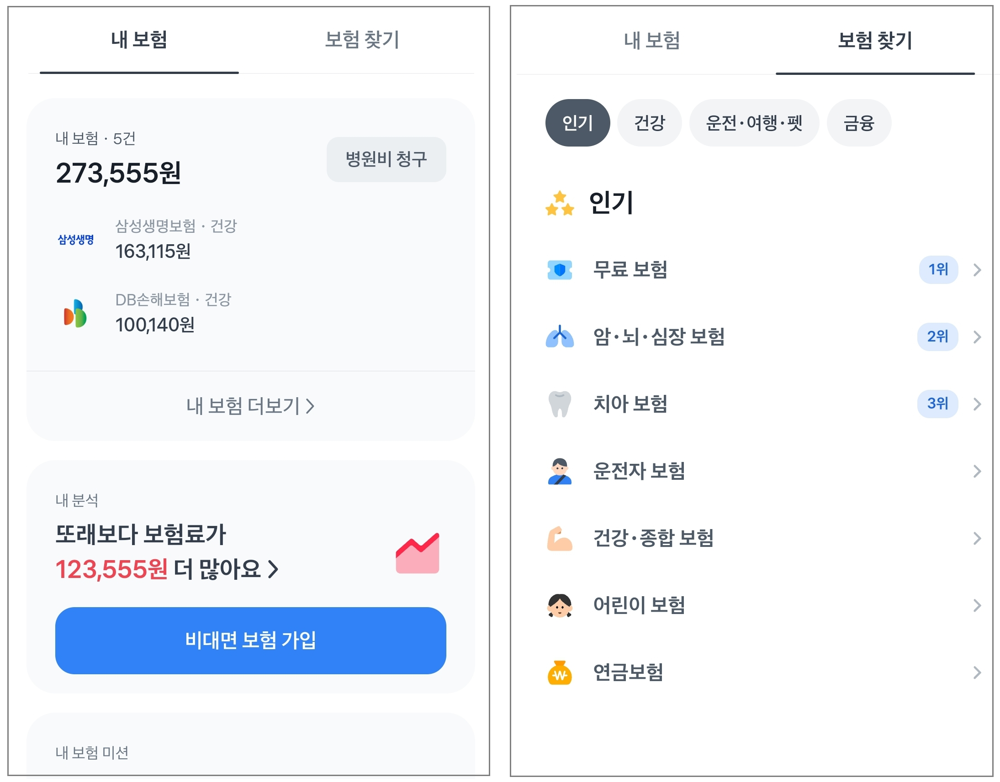
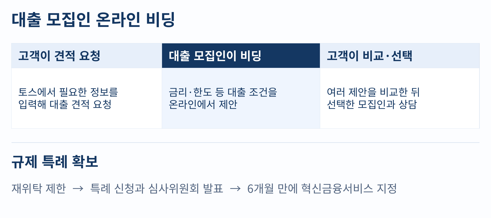

같은 모델로 더 많은 대화 분석

- 문제 의식 및 목표
- 모델이 한 번에 읽을 수 있는 대화량에 한계
- 같은 모델에서 더 긴 대화를 읽도록 설계
- 주요 업무
- 메시지마다 반복되는 항목 이름을 줄이고, 긴 대화에서 찾은 내용을 시간순으로 합쳐 답변
- 결과/성과
- 같은 대화의 예상 입력 토큰 약 60% 절감
- 약 380일치 대화량 분할 분석 설계분량 기준: 채팅방 한 곳에서 하루 메시지 약 210개
톡방 시상식 공유율 / 콘텐츠 7종 중 최고
25.52%다른 에이전트 평균 3.4%의 약 7.5배
사례 보기 → 카카오 / 개인화 메모리 출시기억이 기대한 대로 저장·수정됐는지 평가
94.6%저장·수정 시나리오 반복 평가 최고 평균
사례 보기 → 토스 / 대출 신청 과정 개선서비스 진입 후 대출·상담 신청 완료율
8배개선 전 대비 / 서비스 매출도 28배
사례 보기 → 토스 / 보험 홈 개편개편 전 대비 홈 이탈 사용자 수
22% 감소규제 특례 신청 후 지정까지 걸린 기간
6개월모집인 온라인 비딩 특례 확보
사례 보기 → NHN DATA / 부정 광고 매체 관리부정 광고 매체를 찾아 줄인 비용
연 1.2억 원비정상 요청·클릭을 찾아 매체별로 조치
사례 보기 →일하는 방식

